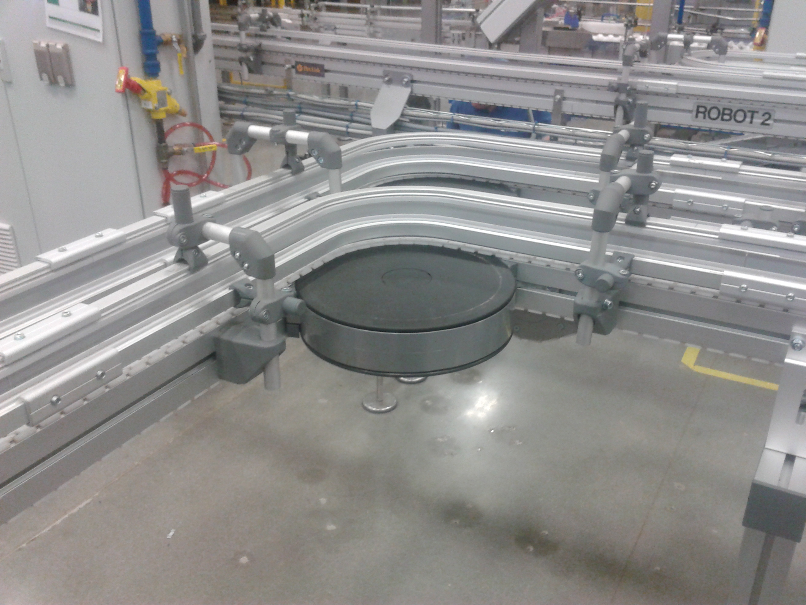

Codice interno: ALIM-01

I nastri alimentari certificati FDA sono progettati per il contatto diretto con alimenti. Offrono massima igiene, resistenza agli oli e facilità di pulizia. Disponibili in PVC, PU e materiali speciali, garantiscono sicurezza e conformità alle normative europee.
Realizziamo nastri alimentari certificati per ogni linea produttiva.
Contattaci